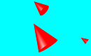

Boids Simulation
Java, Netbeans, Processing

Watch these "birds" fly around the screen. They'll find other birds, group up, and flock together. Use the GUI to add birds or obstacles, or to adjust several of the simulation parameters.
This group project was a simulation of Craig Reynold's 1986 Boids experiment . We gave a few actors on a stage a few simple rules, such as "All boids tend to move toward the center of motion". All of these simple rules together created complex behaviors, flocking behavior in this case. This was an example of emergent property. My partner handled the integration and calculus, and I wrote the logical rules, designed the system, and implemented our realtime GUI for changing system parameters.